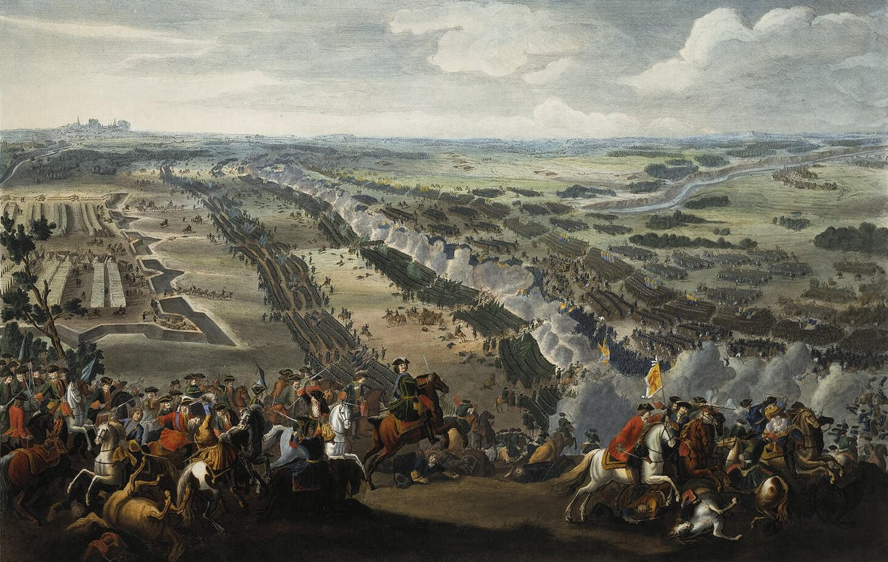
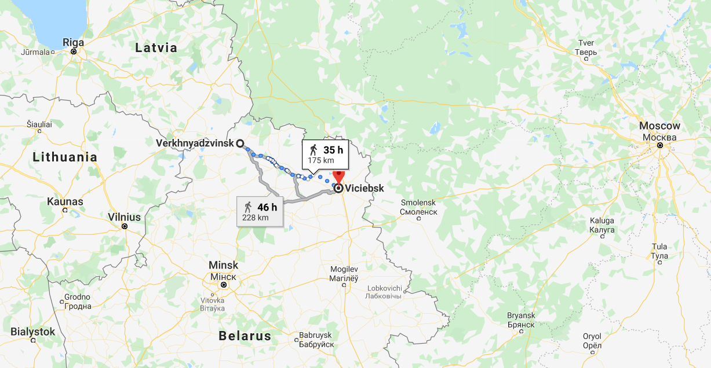
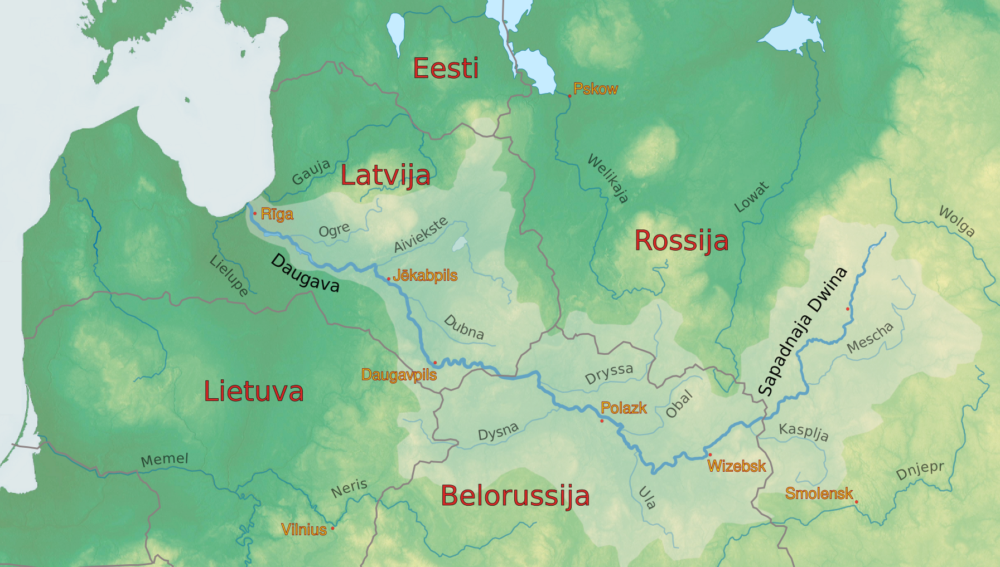
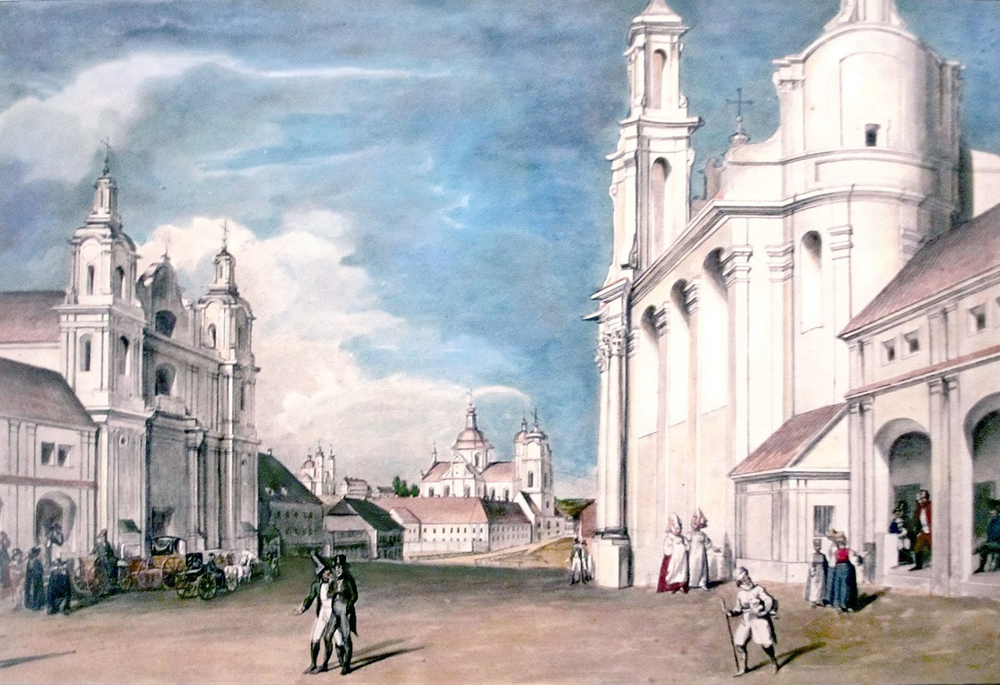
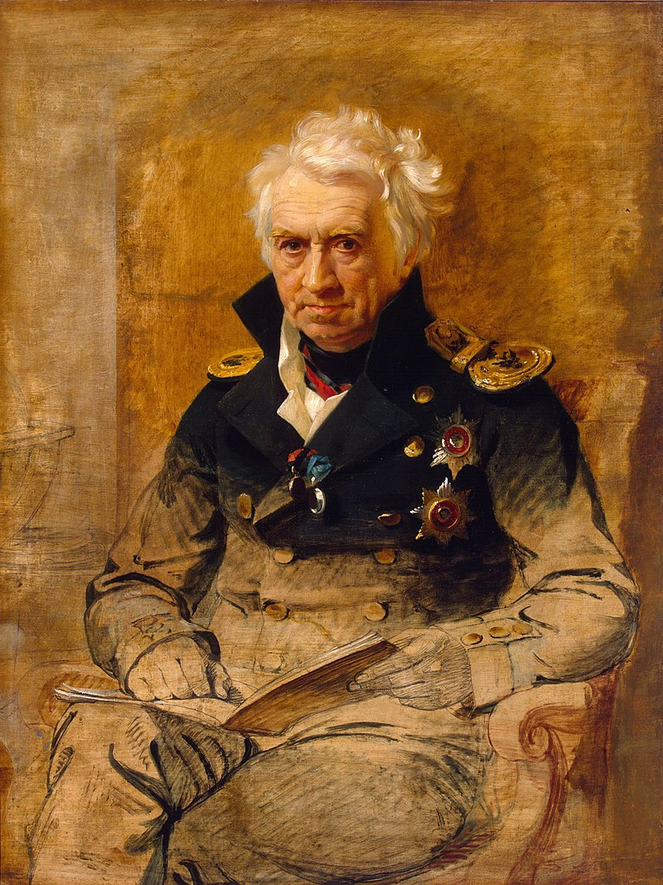
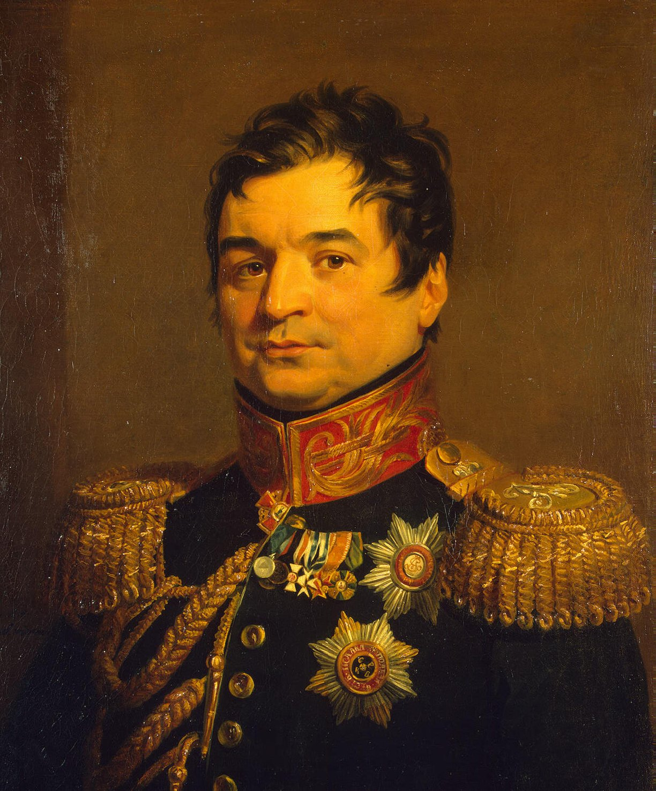
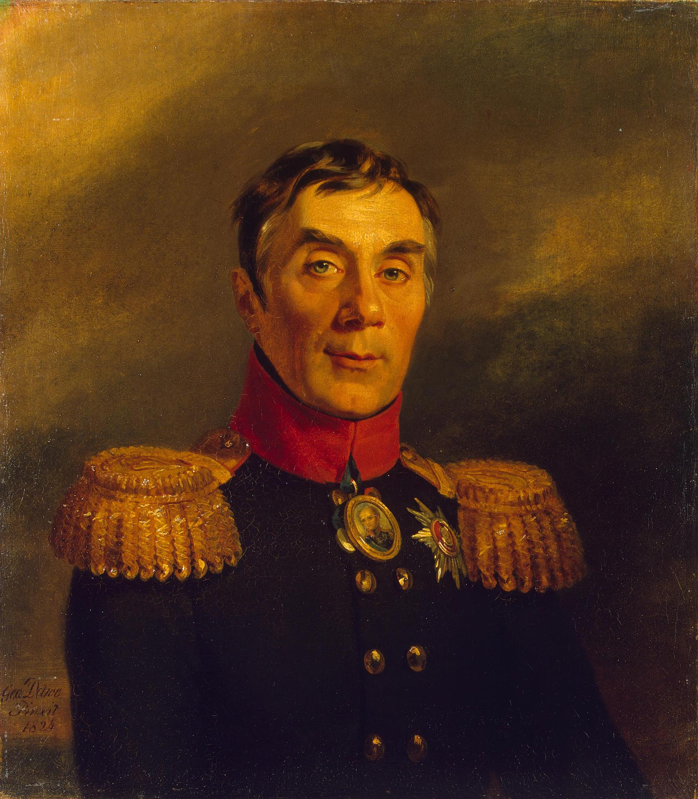

드리사에서 비텝스크로 - 러시아의 구원은 짜르에게서 온다
게시: 2020-01-06T06:30:05+09:00
여태까지 보셨다시피, 당시 러시아군에는 비정상적으로 많은 수의 외국인들, 특히 주로 독일인들이 많이 종군하고 있었습니다. 이렇게 외국인들이 러시아군에서 일을 하자면 당장 언어 문제가 큰 장벽이 되는 것이 정상입니다. 하지만 당시 러시아군 내부의 표준어는 프랑스어였기 때문에 큰 문제가 되지 않았습니다. 독일인 장교들도 프랑스어에 대부분 익숙했거든요. 그렇다고 문제가 없는 것은 아니었습니다. 이때 즈음의 일입니디만, 니에쉬비에즈(Nieshviezh) 인근에서 벌어진 프랑스와 러시아 양측 기병대끼리의 소규모 충돌이 벌어졌습니다. 전투의 혼전 중에 러시아군의 무카노프(Mukhanov) 대령이라는 사람이 부하 장교에게 큰 소리로 명령을 외쳤는데, 그 다음 순간 옆에서 달려든 휘하 카자흐 기병의 칼을 맞고 죽었습니다. 이 대령님이 외친 명령어가 프랑스어였기 때문에 카자흐 기병은 먼지 가득한 혼란 속에서 이 대령을 프랑스군으로 착각한 것입니다. 이렇게 장교들끼리는 프랑스어로 소통이 잘 되었지만 그렇다고 절대 다수인 병사들과 부사관들도 그런 것은 아니었습니다. 또, 모든 장교들이 다 프랑스어를 할 줄 아는 것도 아니었습니다. 가령 프랑스 옆나라인 영국만 하더라도 프랑스어를 잘못하는 장교들이 꽤 많았기 때문에, 스페인에 파병된 영국군 장교들은 급박한 상황에서 프랑스군에게 항복할 때 Je me rends (즈 므 랑, I return myself, 항복한다)이라는 프랑스어가 생각나지 않으면 그냥 Jemmy Round(제미 라운(드))라고 외치라는 반농담 반진담을 주고 받곤 했습니다. 드리사 기지를 검수하기 위해 현장에 도착한 클라우제비츠 소령을 기다리고 있는 것이 딱 그런 상황이었습니다. 그는 러시아어를 몰랐고 가진 증빙서류라고는 퓰 장군이 서명한 명령서 밖에 없었는데 그것도 프랑스어로 쓰인 것이었습니다. 그는 당장 '수상한 외국 스파이'로 간주되어 드리사 기지의 초병들에게 체포되었습니다. 물론 크고 넓은 드리사 기지에는 당연히 프랑스어가 되는 러시아 장교들이 있었기 때문에 곧 풀려나긴 했지요. 클라우제비츠는 퓰과 가까운 사이였습니다만, 그런 그가 둘러보아도 드리사 기지의 군사적 효용성에 대해서는 많은 점이 불투명했습니다. 기지의 어떤 점이 문제였는지 자세한 내용은 나와 있지 않지만, 가장 큰 문제는 거기서 농성한다면 러시아 제1군은 프랑스군에게 포위당한 채 아무것도 못해보고 전멸할 것이라는 것이었습니다. 결국 그가 알렉산드르에게 보고한 내용은 전혀 직설적이지 않은, 굉장히 이리저리 둘러댄 변명이 되어버리고 말았습니다. 다행인 것은 알렉산드르가 바보는 아니었다는 것이었습니다. 알렉산드르도 퓰의 친구인 클라우제비츠가 저런 식으로 말한다는 것은 실제로는 엉망진창이라는 뜻이라는 것을 이해했습니다. 알렉산드르가 마침내 드리사 기지에 도착한 것은 7월 8일이었습니다. 퓰은 짜르를 모시고 기지의 이곳저곳을 다니면서 방어 태세에 대해 자화자찬을 늘어놓았으나, 짜르가 그 주장에 대해 동의하느냐는 눈빛으로 주변 장군들을 둘러보면 다들 짜르와 눈을 마주치기를 피했습니다. 이건 짜르 주변이 다 독일인들로 가득 차 있기 때문만은 아니었습니다. 러시아군이 총 한 방 쏘아보지 못하고 후퇴하는 치욕을 겪은 것이 다 '퓰의 계획대로 드리사로 철수한다'라는 짜르의 결정 때문이었습니다. 그런데 정작 드리사에 와서 보니 방어기지라는 것이 사실상 무덤을 파놓은 것이다 ? 이건 짜르의 위신을 크게 해치는 일이었습니다. 독일인들은 퓰의 입장 때문에, 러시아인들은 짜르의 눈치 때문에 아무도 말을 못했는데, 결국 제3 외국인인 사르데냐 왕국 출신의 알렉상드르 미쇼(Alexandre Michaud)라는 대령이 큰 소리로 이 기지에서 농성하는 것은 자살 행위라는 진언을 올렸습니다. 전해지는 말에 따르면 이때 결국 알렉산드르는 한쪽 구석에서 울었다고 합니다.

(1709년 우크라이나 폴타바에서 벌어졌던 러시아와 스웨덴 간의 전투입니다. 이 전투로 북구의 제왕이던 스웨덴을 꺾고 비로소 러시아가 북구의 강자가 됩니다. 스웨덴으로서도 이 전투가 꼭 나쁜 것만은 아니었던 것이 맛없는 음식으로 악명 높은 스웨덴의 전통 요리에 유일한 별미인 미트볼이 추가되었습니다. 이 전투에서 패배한 카알 12세가 퇴로를 찾아 일단 오스만 투르크로 피신하여 거기서 몇 년을 보내는데, 그후 귀국하면서 미트볼 요리법이 스웨덴에 전파된 것입니다.)
러시아 제1군 본진은 3일 뒤인 7월 11일에서야 드리사 진입을 완료했습니다. 이들 대부분은 '대체 왜 우리가 프랑스군 앞에서 꼬리를 말아쥐고 이렇게 2주간이나 도망을 쳐야 했는가 ? 이럴거라면 대체 빌나까지는 왜 갔던 것인가?' 라는 근본적인 의아함과 분노에 가득차 있었습니다. 힘이 없을 뿐 가오가 없지는 않았던 알렉산드르는 도저히 이들 앞에서 다시 또 후퇴를 해야하는데 이번에는 특별한 목적지도 없다는 말을 할 수가 없었습니다. 그는 제1군 병사들에게 포고문을 내려 1709년 표트르 1세가 스웨덴의 카알 12세를 격파한 폴타바(Poltava) 전투 못지 않은 대승리를 여기서 거두겠다고 선언했습니다. 그래도 알렉산드르는 꽤 이성적인 짜르였습니다. 고된 후퇴에 지쳤던 병사들의 환호소리를 들을 때는 기분이 좋았지만, 그래도 하룻밤을 자고난 뒤에는 알렉산드르의 머리 속에서 다시 계산이 체면에 대한 미련을 억눌렀습니다. 그는 조용히 드리사 포기를 선언하고, 장군들의 조언에 따라 프랑스군에 대항하기 좀더 적절한 장소였던 비텝스크(Vitebsk)로 후퇴하기로 했습니다.

(드리사(Drissa, 벨라루스어로는 Vierchniadzvinsk)에서 비텝스크(Vitebsk, 벨라루스어로는 Viciebsk)까지의 거리입니다.)

(드리사와 비텝스크는 모두 서(西) 드비나 강(Western Dvina)의 강변에 있는 마을 및 도시입니다.)

(19세기 초반 비텝스크의 모습을 그린 풍경화입니다.) 애초에 별 대단한 요충지도 아니었던 드리사에 방어기지를 구축했던 것은 의외로 단순한 이유에서였습니다. 빌나에서 출발할 때 페체르부르그와 모스크바로 갈라지는 길목인데다 서(西) 드비나 강(Western Dvina, 러시아아로는 드비나 강이고 라트비아어로는 Daugava 강)에 접한 곳이기 때문이었습니다. 즉, 강을 끼고 있다는 것이 가장 큰 요인이었습니다. 하지만 이미 19세기 초의 근대전에서는 강이라는 요소가 뭐 그렇게까지 결정적인 장벽이 되지는 못했고, 강력한 방어선을 구축한다는 것은 좁고 험한 지형의 포르투갈에서나 가능한 일이었지 드넓은 벨라루스(Belarus) 평원에서는 불가능한 일이었습니다. 이제 새로 후퇴할 목표 지점이 비텝스크로 지정되었는데, 여기는 어떤 이유로 목표 지점이 되었을까요 ? 여기에도 뭐 대단한 군사 철학이 담겨있지는 않았습니다. 애초에 드리사를 방어기지로 선택했던 이유인 서 드비나 강은 원래 동쪽에서 흘러올 때 남쪽으로 크게 휜 만곡부를 그리며 서쪽으로 흘러가는데, 드리사에서 동쪽으로 후퇴하다보면 다시 만나게 되는 서 드비나 강변의 도시가 비텝스크였던 것입니다. 결국 비텝스크에 뭐 꿀단지를 묻어놓은 것도 아니고 '일단 후퇴' 외에는 별다른 묘책이 없었다는 이야기지요. 그렇게 비텝스크도 방어상에 별 이점이 없는 곳이었다면 차라리 그냥 드리사에서 결판을 내는 것이 더 낫지 않았을까요 ? 아닙니다. 비텝스크 자체에는 별 의미가 없었지만, 후퇴에는 의미가 있었습니다. 바로 바그라티온의 제2군과 합류하는 것이었습니다. 제1군만으로 나폴레옹의 본진과 붙었다가는 각개격파를 당하기 딱 좋았으므로 어쩔 수 없이 후퇴해야 했습니다. 그런데 무질서한 패퇴가 아니라 질서있는 후퇴에는 시간이 걸렸습니다. 어느 부대가 어느 루트로 어떤 순서대로 이동할지 계획안을 짜는데만도 시간이 걸렸고, 장기간 농성을 위해 준비했던 군수품도 파괴를 하든 수송을 하든 처리를 해야 했습니다. 그런 잡다한 일들을 처리하다보니 러시아군이 드리사에서 철수를 시작한 것은 알렉산드르가 후퇴를 결심하고나서도 무려 4일이나 지난 7월 16일이었습니다. 이 모든 난리는 알고보니 쥐뿔도 없었던 방구석 제갈공명 퓰을 믿었던 알렉산드르 본인의 책임이었습니다. 군에서 가장 나쁜 지휘관은 어리석은 결정을 내리는 지휘관이 아니라 아무 결정도 내리지 않는 지휘관입니다. 또 가장 나쁜 군 조직은 어리석은 인간을 지휘관으로 앉혀놓은 조직이 아니라, 누가 지휘관인지 불분명한 조직입니다. 당시 러시아군이 딱 이랬습니다. 총사령관도 없고, 제1군 사령관 바클레이는 짜르 알렉산드르와 아무 보직도 없이 짜르를 따라다니는 높으신 분 때문에 사실상 지휘관 노릇을 못하고 있었습니다. 짜르가 바로 옆에 붙어 앉아 감놔라 배놔라 하며 (대문호 톨스토이의 표현대로) '조언이라는 이름의 명령'을 남발하니 모든 지휘 체계가 엉망진창이 되어버렸던 것입니다. 애초에 장병들과 함께 하겠다며 편안한 황궁을 떠나 빌나의 거칠고 불편한 사령부로 찾아온 짜르는 나름대로 선의를 다한 것이었지만, 결국 러시아군을 위기로 몰아넣는 참담한 결과를 낳았을 뿐이었습니다. 알렉산드르가 군 사령부와 함께 하겠다며 페체르부르그를 떠날 때 그가 총애하던 여동생 예카테리나 공주가 그토록 말렸는데, 그 말을 듣는 것이 좋았을 것입니다. 하지만 이제 와서 알렉산드르가 사령부를 떠날 수도 없었습니다. 그랬다가는 이 모든 실패의 책임이 알렉산드르에게 있다는 것을 자인하는 꼴이 되어버리기 때문이었습니다. 이건 알렉산드르에게는 정말 진퇴양난의 상황이었는데, 그건 곧 러시아군 전체의 피해로 이어질 수 밖에 없었습니다. 알렉산드르의 존재 자체가 재앙이었는데, 여기서 물러설 수는 없다면서 알렉산드르가 군 사령부에 계속 뭉개고 앉아있을 경우 그 피해는 고스란히 군이 뒤집어 쓸 수 밖에 없었기 때문이었습니다. 결국 누군가가 구국의 용단을 내려 총대를 매고 짜르에게 '꺼져'라고 충언을 올려야 했습니다. 여기에 필요한 용기는 필마단기로 나폴레옹의 그랑다르메에 돌격하기 위해 필요한 것보다 더 큰 것이었습니다. 아마 상남자 바그라티온에게도 그런 용기는 없었을 것입니다.

(쉬시코프(Aleksandr Semyonovich Shishkov)입니다. 그는 원래 해군 제독이었는데 알렉산드르의 개혁안에 반대하여 예편당한 사람이었습니다. 그는 러시아어를 더럽히고 있는 외국어, 특히 프랑스어를 추방하자는 학회 활동을 하는 등 러시아 민족주의 운동의 선구자였습니다. 알렉산드르는 자신이 쫓아낸 사람인데도 불구하고 그런 그의 민족주의 운동에 깊은 인상을 받고 다시 그를 국무부 장관으로 임명한 바 있습니다.)

(발라쇼프(Alexander Balashov)입니다. 이 사람도 원래 군 장성 출신으로, 당시 경찰청장 직위를 가지고 짜르를 수행하고 있었습니다.)

(아락체예프(Alexey Andreyevich Arakcheyev)입니다. 그는 1810년에 이미 국방부 장관직에서 물러나 있었지만 그렇다고 완전히 백의종군한 것은 아니었고 국무회의 위원 중 하나였습니다. 그는 짜르의 명령을 글자 그대로 충실히 수행하는 충신이었고, 아마 그래서 감히 짜르에게 직언을 올릴 수 있었을 것입니다.) 문관 중에서도 진정한 용기를 가진 남자들은 있습니다. 당시 국무부 장관이던 쉬시코프(Aleksandr Semyonovich Shishkov)가 바로 그 사람이었습니다. 그의 주도 하에, 경찰청 장관 발라쇼프(Alexander Balashov)와 전직 국방부 장관 아락체예프(Alexey Andreyevich Arakcheyev or Arakcheev)가 연명으로 알렉산드르에게 편지를 썼습니다. 멸문지화를 당할 수도 있는 그 편지를 쓴 이들도 감히 알렉산드르에게 직접 이 편지를 전달하지는 못하고 드리사에서의 짜르 집무실 책상 위 여러 서류들 사이에 올려만 놓았습니다. 그런데 알렉산드르는 드리사에서 철수할 때도 대체 그 편지를 읽었는지 어쨌는지 아무 말이 없었습니다. 이 용감한 삼총사는 애간장이 끓었습니다. 그런데 비텝스크에 거의 다 도달한 곳인 폴로츠크(Polotsk)까지 다 와서는, 갑자기 짜르가 아락체예프에게 툭 한마디 말을 던졌습니다. "당신들 메모를 읽어 보았소." 아마 아락체예프의 심장이 덜컹 했을 것입니다. 알렉산드르는 나름대로 용기있는 군주였습니다. 그는 그 길로 말을 타고 바클레이의 숙소로 갔습니다. 거기서 초라한 저녁을 먹고 있다가 짜르의 급작스러운 방문을 받고 놀란 바클레이와 1시간 정도 회담을 한 뒤, 그는 이렇게 말하고는 군을 떠나 모스크바로 갔습니다. "안녕히 계시오. (이때도 나폴레옹보다 더 유창한 프랑스어 발음으로 Au revoir 라고 했답니다). 내 군대를 장군에게 일임하겠소. 이것이 내가 가진 유일한 군대라는 점을 잊지 말아주시오." 이것이 러시아가 패배에서 승리로 전환되는 순간이었습니다. 즉, 무능한 재벌 2세가 경영에서 손을 떼고 유능한 전문가에게 경영권을 맡기는 순간이었지요. 소유와 경영의 분리가 1812년 러시아를 구했던 것입니다. 하지만 소유와 경영이 분리된다고 모든 기업이 흥하는 것은 아닙니다. 무자비한 경쟁자 나폴레옹이 드리사에서 삽질을 하며 시간을 허비하던 러시아군을 그대로 내버려둘 턱이 없었습니다. 나폴레옹은 무엇을 하고 있었을까요 ?
Source : 1812 Napoleon's Fatal March on Moscow by Adam Zamoyski https://en.wikipedia.org/wiki/Alexander_Shishkov https://www.britannica.com/biography/Aleksandr-Semyonovich-Shishkov https://en.wikipedia.org/wiki/Alexander_Balashov https://en.wikipedia.org/wiki/Aleksey_Arakcheyev